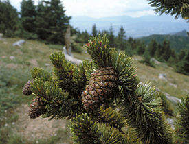

Сосна остистая
| Сосна остистая | ||||||||||||||||
|---|---|---|---|---|---|---|---|---|---|---|---|---|---|---|---|---|
|  Сосна остистая. Хвоя и шишки. | ||||||||||||||||
| Научная классификация | ||||||||||||||||
| Международное научное название | ||||||||||||||||
|
Pinus aristata Engelm., 1862 | ||||||||||||||||
| Ареал | ||||||||||||||||
| Охранный статус | ||||||||||||||||
| ||||||||||||||||
{kind=link}
{kind=link}
Сосна́ ости́стая (лат. Pinus aristata) — вид хвойных деревьев рода Сосна. Произрастает в Колорадо и в северной части Нью-Мексико, часто в горах, на высоте до 3700 м над уровнем моря.
Описание[править | править код]
Дерево средних размеров, высотой 5—15 м, с диаметром ствола до 1,5 м.
Кора серо-коричневая, тонкая, в основании ствола чешуйчатая.
Хвоя от тёмно-зелёного до голубовато-зёленого цвета, хвоинки 2,5—4 см длиной, собраны в пучки по пять штук.
Шишки яйцевидно-цилиндрические. Закрытые 5—10 см длиной и 3—4 см в диаметре, сиреневые. Зрелыми шишки становятся через 16 месяцев, они желтовато-песочного цвета.
Семена 5 мм длиной, с 10—20-миллиметровым крылышком.
Это растение редко доживает до 1500 лет, однако возраст некоторых растений может приближаться 2500 годам. Сосна остистая межгорная (другой вид той же подсекции) может жить до 5000 лет.
{kind=link}
{kind=link}
{kind=link}
Систематика[править | править код]
Относится к подсекции Balfourianae единственной секции Parrya подрода Ducampopinus рода Сосна (Pinus). Другими видами этой подсекции являются также произрастающие в Скалистых горах Сосна остистая межгорная (Pinus longaeva) и Сосна Бальфура (Pinus balfouriana). Ранее Сосна остистая рассматривалась как подвид или даже разновидность последней Pinus balfouriana subsp. aristata.
Ссылки[править | править код]
| Это заготовка статьи по ботанике. Вы можете помочь проекту, дополнив её. |
{kind=link}